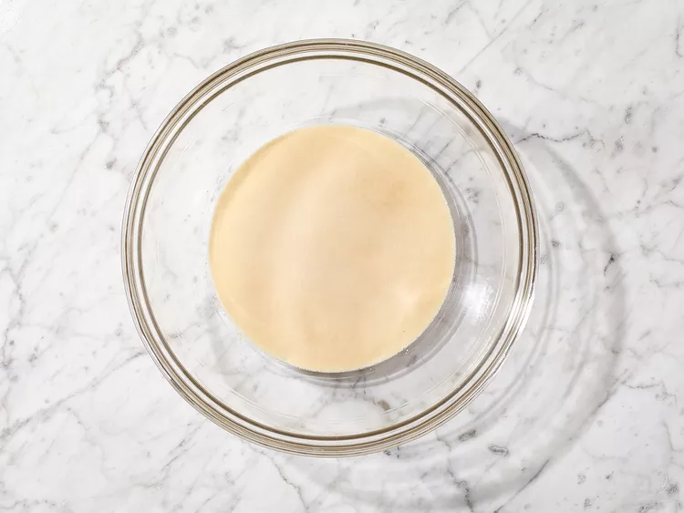
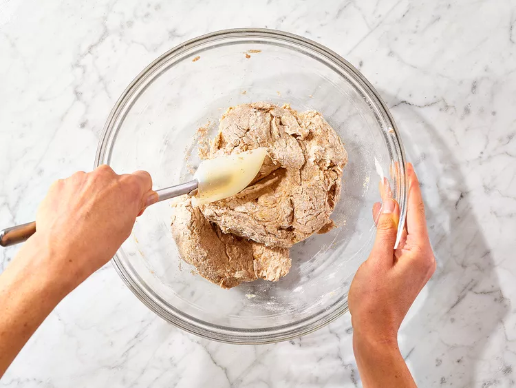
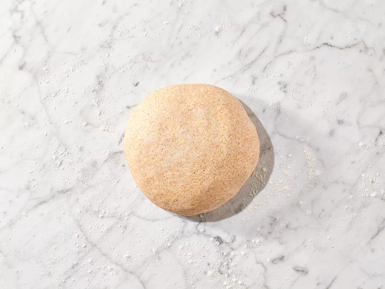
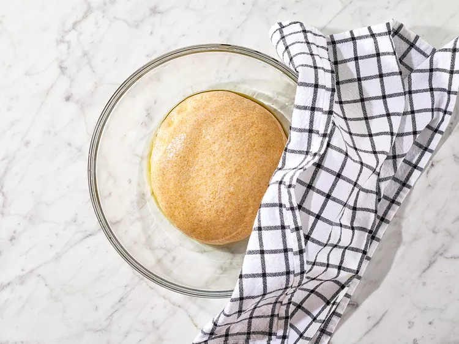
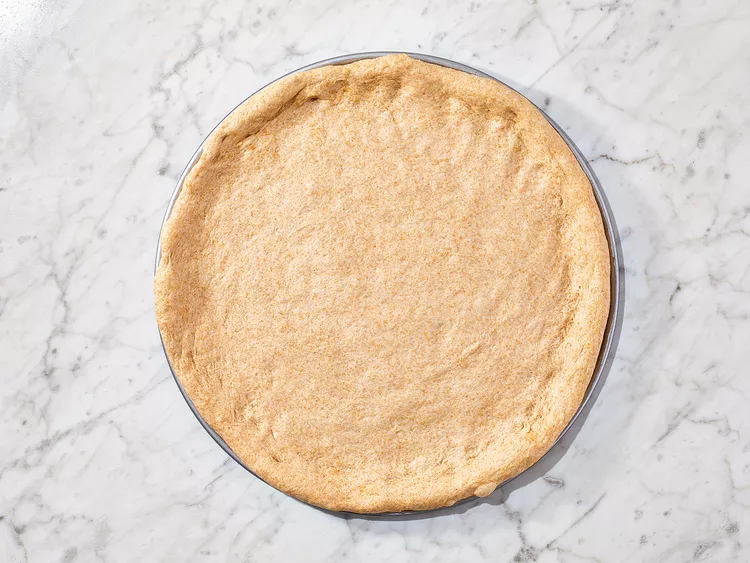

Recipe Catalog.
Welcome to our extensive recipe catalog, where culinary enthusiasts like you can discover a world of delectable dishes from around the globe. Whether you're craving classic comfort food or seeking adventurous culinary experiences, our comprehensive collection has something to tantalize every palate.
Wheat-Pizza-Crust
The crust made from this whole wheat pizza dough recipe bakes up beautifully, with a crisp top and a soft, chewy interior. Use with your preferred pizza recipe or toppings.
Ingredients
- 1 ½ cups warm water (110 degrees F/45 degrees C)
- 1 teaspoon white sugar
- 1 tablespoon active dry yeast
- 1 tablespoon olive oil
- 1 teaspoon salt
- 2 cups whole wheat flour
- 1 ½ cups all-purpose flour
Directions
Step 01:
Warm water should be added to a big bowl, and sugar should then be mixed in to dissolve. After that, yeast should be sprinkled on top, and the mixture should be left for about ten minutes, or until it starts to foam.

Step 02:
Mix olive oil and salt with yeast mixture, then add whole wheat flour and 1 cup of all-purpose flour to form the dough.

Step 03:
On a floured surface, transfer the dough and add the rest of the all-purpose flour. Knead the dough for about 10 minutes until it becomes smooth and has absorbed all of the flour.

Step 04:
Coat the surface of a bowl with oil and place the dough inside. Let it sit in a warm spot and cover loosely with a towel until it doubles in size, which should take around an hour.

Step 05:
Sprinkle some flour on your work surface and place the dough on it. You can either divide the dough into two portions for making two thin crusts or leave it as is to make a single thick crust.
Step 06:
Shape the dough into a firm ball, then return it to a bowl that has been coated with oil and rotate the dough to cover the surface with the oil. Loosely cover the bowl with a towel and leave it in a warm location until it has doubled in size, which should take approximately 45 minutes.
Step 07:
Prepare a large pizza pan by greasing it. Use a rolling pin to roll a ball of dough until it can no longer be stretched any further. Next, drape the dough over your fists, and while rotating it, gently pull the edges outward until it reaches the desired size. Finally, place the dough on the prepared pizza pan.

Step 08:
Prepare a dish by applying sauce, cheese, and toppings over it before baking.

Crust preparation involves topping and baking.
To achieve the perfect pizza, preheat the oven to 425 degrees F (220 degrees C) and apply sauce and toppings of your liking on the crust. Bake the pizza in the oven until it becomes crispy and browned at the edges, typically taking around 15 to 20 minutes. Once done, take it out and let it cool for 5 minutes before serving. Keep in mind that while making pizza is easy, there are a few tips and tricks that can improve the process.